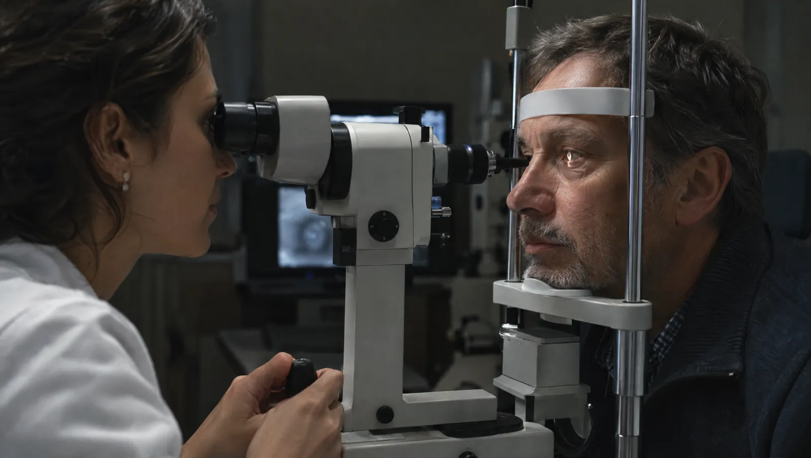
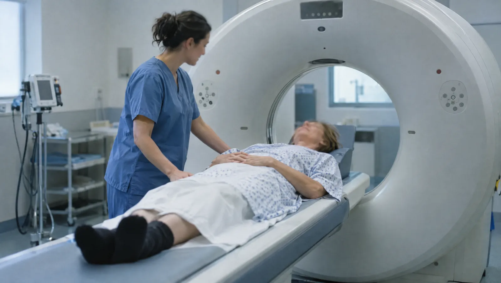
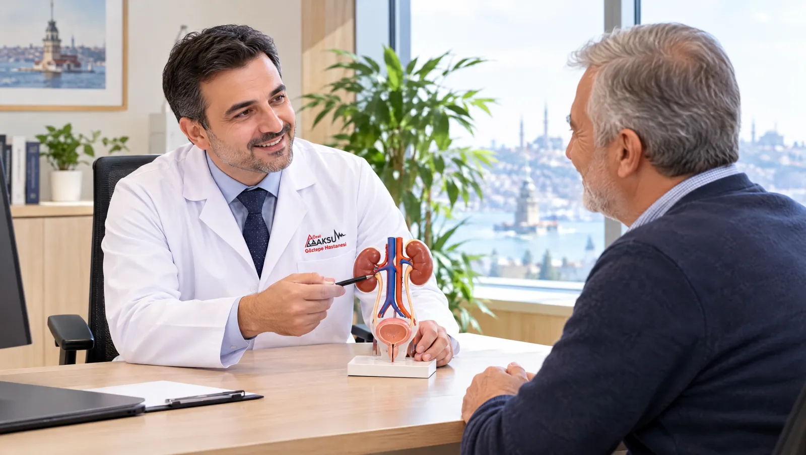
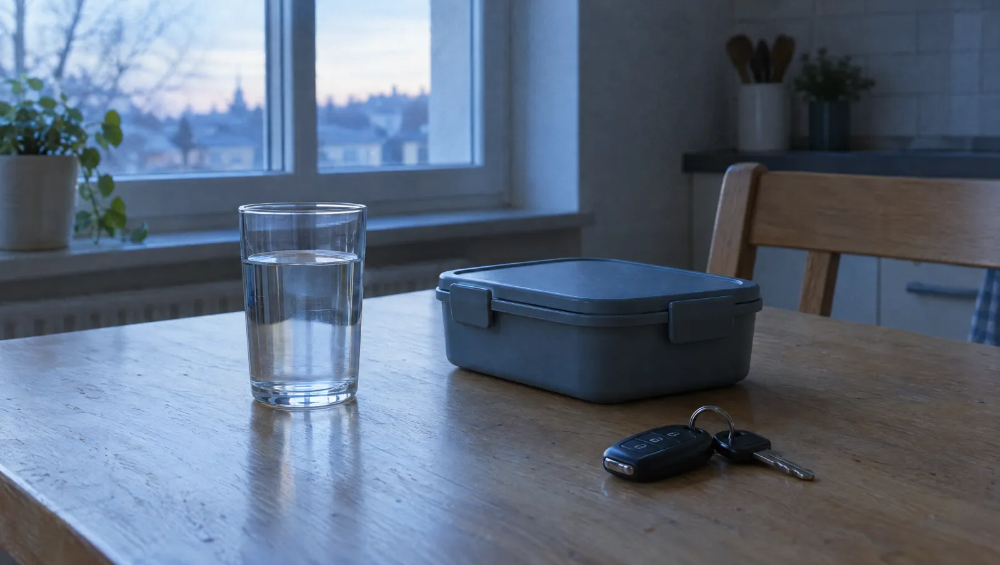
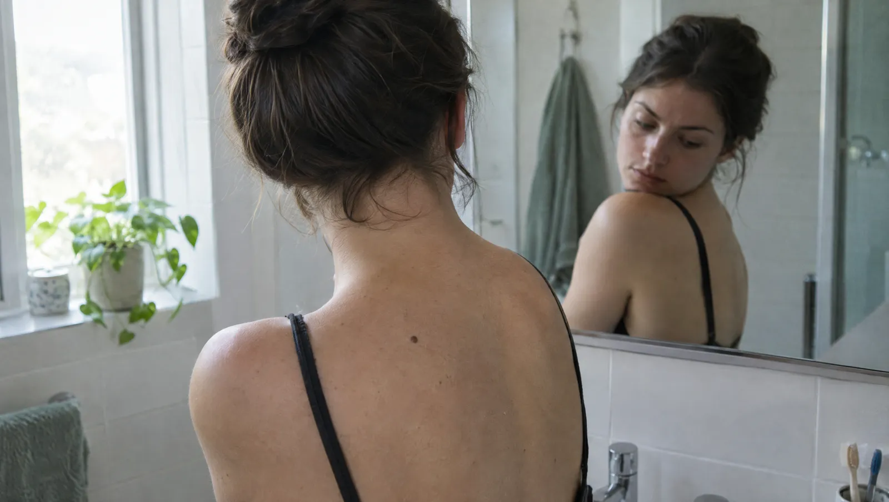

7 Ekim 2026, 5 dk okuma
Hekimlerimizin gözden geçirdiği bilgilendirme yazıları: belirtiler, tetkiklere hazırlık ve hangi durumda hekime başvurmanız gerektiği.












Yazılarda yanıtını bulamadığınız genel bir sağlık sorusunu hekimlerimize yazılı olarak iletebilirsiniz.